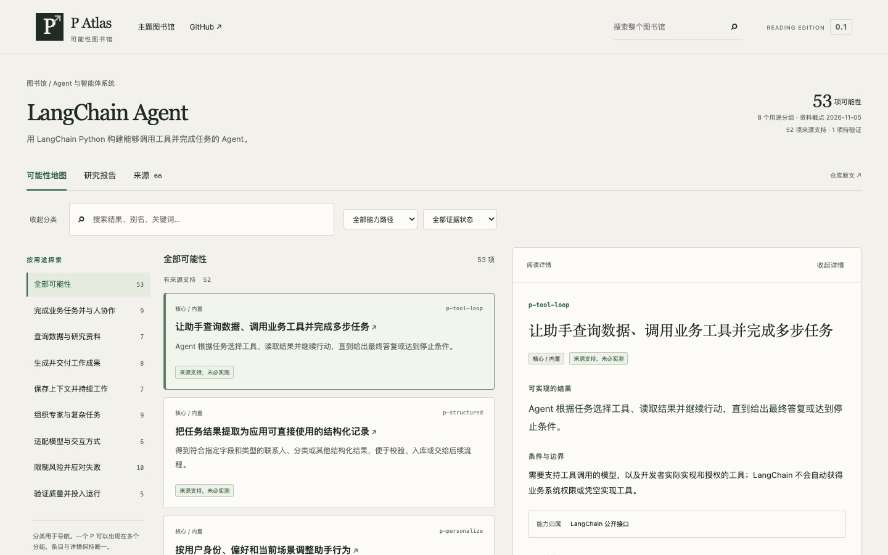
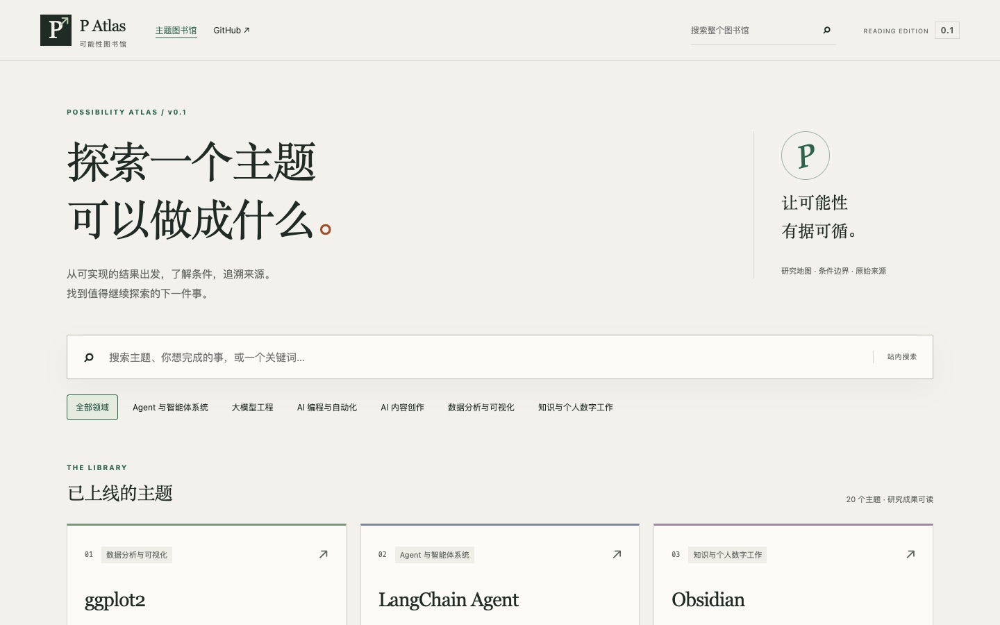

软件 / 资料库
P Atlas
可能性图书馆
探索一个主题可以做成什么：每项可能性都写明条件，并追溯到原始来源。
已发布 已发布，可以直接使用。

这是什么
从可实现的结果出发，而不是从功能列表出发。每个主题下是一张可能性地图：一项可能性是什么结果、需要什么条件与组件、有哪些来源支持，都写在同一张卡片里。“来源支持”不等于运行实测，页面会如实标出证据状态，仍待验证的方向单独标记。
核心功能
- 20 个主题、6 个领域，每个主题附研究报告与来源列表
- 按用途分类浏览，可按能力路径和证据状态筛选，也可全库搜索
- 每项可能性包含可实现的结果、条件与边界、必要组件和原文来源
- 可查看原始条目的 JSON 与 Markdown，以及研究校验记录
界面截图
